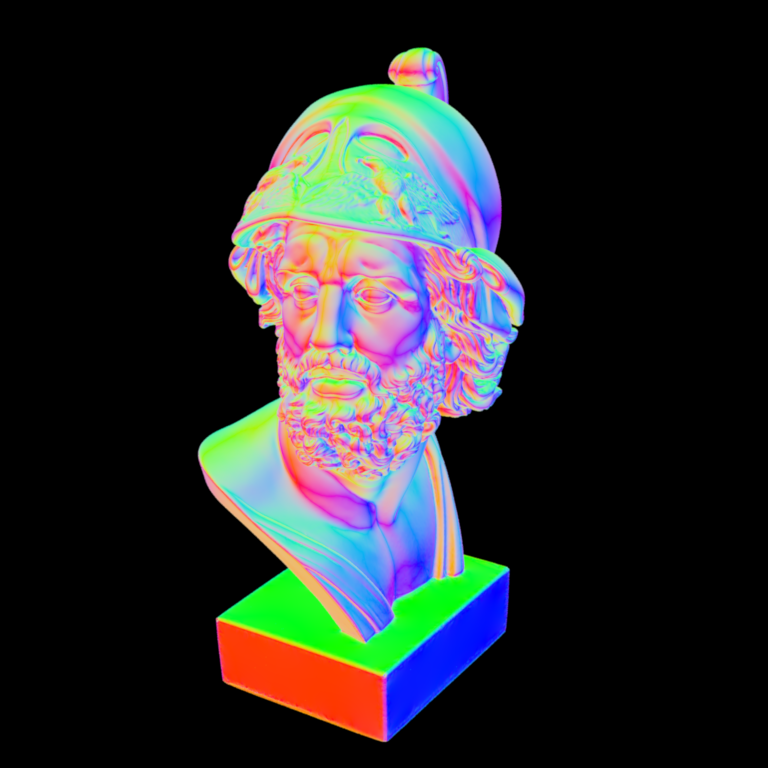

**Homework 2**
Student name:
Sciper number:
Octree construction (50 pts)
============================
Ray traversal (25 pts)
======================
Improved ray traversal (25 pts)
===============================
Surface normal visualization of the Ajax bust:

Note: Nori automatically generates both an `.exr` as well as an sRGB tonemapped `.png` image of your rendering that is directly used for the comparison above. Please still commit both versions in your `results/homework-X` folder.
Feedback
========
We would appreciate any comments or criticism to improve the projects in future years--naturally, this part will not be graded. Examples of information that is useful to us includes:
* How much time did you spend on the assignment? How was it divided between designing, coding, and testing?
* What advice should we have given you before you started?
* What was hard or surprising about the assignment?
* What did you like or dislike? What else would you change?